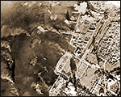

|
j
a v a s c r i p t |
Pg. 1/5
September 22, 1944

Click for Images
No gas, water again dirty. The air-raid siren went on at 0715, and local stations again went off the air. American planes arrived 25 minutes later to a hot reception. It's great bombing weather, a bit misty but visibility is good. Good for antiaircraft too — the planes are easy to spot under the white clouds. I saw about eight planes diving. I followed two pairs coming from the east, clearly visible and ideal targets for the antiaircraft for a full 60 seconds. They split over San Juan; one pair headed for Nichols while the other went for Murphy or the Pinaglabanan munitions dump. I lost sight of them when they flipped over and dived. A bit later I saw some beautiful dive-bombing over the Port Area. Every time I saw a plane dive out of sight I found myself thinking: That's enough now ... pull up, pull up. I couldn't see how they could possibly miss their targets, or how the antiaircraft could miss them. This time, there was a clear difference between the sound of bombs and antiaircraft, but the antiaircraft, though severe, seemed ineffective, and no Japanese fighters rose to challenge the dive-bombers or the fighters patrolling above them. 0830: We're still under air raid conditions. The Air Raid signal is a wavy siren. Two 30-second-blasts means Alert; a 90-second-blast means All Clear. The Japanese always go from Air Raid to Alert before an All Clear — never directly. We were on Alert all of last night. I doubt if we'll get an All Clear today or tomorrow. 0857: They're here again — flying low. There goes the siren ... needless now. Ma called me to the front of the house where I counted 29 and later 3 more dive-bombers in formations of 3's. They were clearly visible, and although antiaircraft sounded heavy, I couldn't even see a puff though I did hear a Japanese pom-pom for the first time. The planes split in ALL directions and hit their targets with the heaviest bombs so far. The concussion waves were easily felt — our house really shook. Some planes headed for the Bataan-Olongapo sector while others hit Camp Murphy and the Port Area — the latter especially hard. The Port Area is jammed with vital war materials that the Japanese have been unable to move due to a lack of transportation. |
|
|
|
|